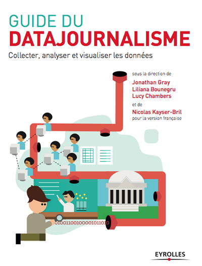

<div class='span6'>

  <h2>Préface</h2>

  <ul class='toc'>
          <li><a href="pages/0101.html">Aux illustres anonymes</a></li>
          <li><a href="pages/0102.html">Contributeurs</a></li>
          <li><a href="pages/0103.html">Ce qu’est ce livre (et ce qu’il n’est pas)</a></li>
          <li><a href="pages/0104.html">Le manuel en un clin d'oeil</a></li>
  </ul>

  <h2><a href="pages/0200.html">Introduction</a></h2>

  <ul class='toc'>
          <li><a href="pages/0201.html">Qu’est-ce que le datajournalisme ?</a></li>
          <li><a href="pages/0202.html">Un indicateur du journalisme en mutation</a></li>
          <li><a href="pages/0203.html">Pourquoi les journalistes doivent utiliser des données</a></li>
          <li><a href="pages/0204.html">Pourquoi le datajournalisme est-il important ?</a></li>
          <li><a href="pages/0205.html">Quelques exemples du genre</a></li>
          <li><a href="pages/0206.html">Le datajournalisme en perspective</a></li>
  </ul>

  <h2><a href="pages/0300.html">Dans la salle de rédaction</a></h2>

  <ul class='toc'>
          <li><a href="pages/0301.html">Datajournalisme à la BBC</a></li>
          <li><a href="pages/0302.html">Comment fonctionne l’équipe des applications d’information du Chicago Tribune</a></li>
          <li><a href="pages/0303.html">Dans les coulisses du Guardian Datablog</a></li>
          <li><a href="pages/0304.html">Datajournalisme au Zeit Online</a></li>
          <li><a href="pages/0305.html">Comment recruter un hacker</a></li>
          <li><a href="pages/0306.html">Aller chercher les talents dans les hackathons</a></li>
          <li><a href="pages/0307.html">Suivre les flux financiers : datajournalisme et collaboration internationale</a></li>
          <li><a href="pages/0308.html">Nos histoires sont du code</a></li>
          <li><a href="pages/0309.html">Kaas & Mulvad : contenu semi-fini pour groupes d’influence</a></li>
          <li><a href="pages/0310.html">Créations d’applis à Rue89</a></li>
          <li><a href="pages/0311.html">Modèles économiques de datajournalisme</a></li>
  </ul>

  <h2><a href="pages/0400.html">Études de cas</a></h2>

  <ul class='toc'>
          <li><a href="pages/0401.html">Le fossé des opportunités</a></li>
          <li><a href="pages/0402.html">Une enquête de neuf mois sur les fonds structurels européens</a></li>
          <li><a href="pages/0403.html">Aspirer les données d’Ameli</a></li>
          <li><a href="pages/0404.html">Contrôler les dépenses publiques avec OpenSpending.org</a></li>
          <li><a href="pages/0405.html">Une pige de « scraping olympique »</a></li>
          <li><a href="pages/0406.html">Hack électoral en temps réel (Hacks/ Hackers Buenos Aires)</a></li>
          <li><a href="pages/0407.html">Crowdsourcing : l’accès à la TNT dans le sud-est de la France</a></li>
          <li><a href="pages/0408.html">Le hackathon Mapa76</a></li>
          <li><a href="pages/0409.html">La couverture des émeutes au Royaume-Uni par le Guardian Datablog</a></li>
          <li><a href="pages/0410.html">Le design d’informations au service du datajournalisme</a></li>
          <li><a href="pages/0411.html">Évaluer les écoles de l’Illinois</a></li>
          <li><a href="pages/0412.html">Contrôler les factures d’hôpitaux</a></li>
          <li><a href="pages/0413.html">Le Véritomètre</a></li>
          <li><a href="pages/0414.html">Le téléphone omniscient</a></li>
          <li><a href="pages/0415.html">Quel modèle de voiture ? Taux d’échec au contrôle technique</a></li>
          <li><a href="pages/0416.html">Le subventionnement des bus en Argentine</a></li>
          <li><a href="pages/0417.html">Comment Regards Citoyens a créé NosDéputés.fr, base de données de l’activité parlementaire</a></li>
          <li><a href="pages/0418.html">Le grand tableau des élections</a></li>
          <li><a href="pages/0419.html">Crowdsourcing du prix de l’eau</a></li>
  </ul>

  <h2><a href="pages/0500.html">Obtenir des données</a></h2>

  <ul class='toc'>
          <li><a href="pages/0501.html">Guide de référence rapide</a></li>
          <li><a href="pages/0502.html">Votre droit d’accès aux données publiques</a></li>
          <li><a href="pages/0503.html">Le wobbing, ça marche !</a></li>
          <li><a href="pages/0504.html">Recueillir des données sur le Web</a></li>
          <li><a href="pages/0505.html">Le Web comme source de données</a></li>
          <li><a href="pages/0506.html">Le crowdsourcing de données au Guardian Datablog</a></li>
          <li><a href="pages/0507.html">Utiliser et partager des données : la loi, les petits caractères et la réalité</a></li>
  </ul>

  <h2><a href="pages/0600.html">Comprendre les données</a></h2>

  <ul class='toc'>
          <li><a href="pages/0601.html">Se former aux données en trois étapes simples</a></li>
          <li><a href="pages/0602.html">Quelques astuces pour travailler avec des chiffres</a></li>
          <li><a href="pages/0603.html">Notions de base pour travailler avec des données</a></li>
          <li><a href="pages/0604.html">Histoires de données</a></li>
          <li><a href="pages/0605.html">Les datajournalistes parlent de leurs outils préférés</a></li>
          <li><a href="pages/0606.html">Utiliser la visualisation pour faire parler les données</a></li>

  </ul>

  <h2><a href="pages/0700.html">Publier des données</a></h2>

  <ul class='toc'>
          <li><a href="pages/0701.html">Présenter des données au public</a></li>
          <li><a href="pages/0702.html">Concevoir une application d’information</a></li>
          <li><a href="pages/0703.html">Applications d’actualité chez ProPublica</a></li>
          <li><a href="pages/0704.html">La visualisation, meilleur outil du datajournaliste</a></li>
          <li><a href="pages/0705.html">Utiliser des visualisations pour raconter des histoires</a></li>
          <li><a href="pages/0706.html">Différents graphiques pour différents angles</a></li>
          <li><a href="pages/0707.html">Visualisation de données maison : nos outils préférés</a></li>
          <li><a href="pages/0708.html">Comment nous publions nos données au Verdens Gang</a></li>
          <li><a href="pages/0709.html">Données publiques sur les réseaux sociaux</a></li>
          <li><a href="pages/0710.html">Impliquer les gens autour de ses données</a></li>
  </ul>
</div>

<div class='span6'>

    

</div>